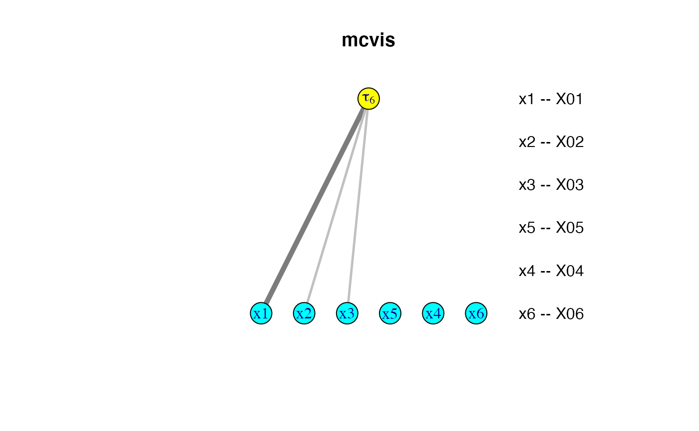

mcvis.RmdThe mcvis package provides functions for detecting multi-collinearity (also known as collinearity) in linear regression. In simple terms, the mcvis method investigates variables with strong influences on collinearity in a graphical manner.
Suppose that we have a simple scenario that one predictor \(X_1\) is almost linearly dependent on another two predictors \(X_2\) and \(X_3\), thus \(X_1\) is strongly correlated with these two predictors. The dependence among these three variables is a sufficient cause for collinearity which can be shown through large variances of estimated model parameters in linear regression. We illustrate this with a simple example:
## Simulating some data set.seed(1) p = 6 n = 100 X = matrix(rnorm(n*p), ncol = p) X[,1] = X[,2] + X[,3] + rnorm(n, 0, 0.01) y = rnorm(n) summary(lm(y ~ X)) #> #> Call: #> lm(formula = y ~ X) #> #> Residuals: #> Min 1Q Median 3Q Max #> -2.56042 -0.73579 -0.05585 0.86967 2.20334 #> #> Coefficients: #> Estimate Std. Error t value Pr(>|t|) #> (Intercept) 0.02084 0.11157 0.187 0.852 #> X1 10.14768 10.34285 0.981 0.329 #> X2 -10.08175 10.33068 -0.976 0.332 #> X3 -10.30688 10.34038 -0.997 0.321 #> X4 0.04175 0.11321 0.369 0.713 #> X5 0.07191 0.09563 0.752 0.454 #> X6 -0.16951 0.11482 -1.476 0.143 #> #> Residual standard error: 1.094 on 93 degrees of freedom #> Multiple R-squared: 0.06683, Adjusted R-squared: 0.006628 #> F-statistic: 1.11 on 6 and 93 DF, p-value: 0.3625
The mcvis method highlights the major collinearity-causing variables on a bipartite graph. There are three major components of this graph: + the top row renders the “tau” statistics and by default, only one tau statistic is shown (\(\tau_p\), where \(p\) is the number of predictors). This tau statistic measures the extent of collinearity in the data and relates to the eigenvalues of the correlation matrix in \(X\). + the bottom row renders all original predictors. + the two rows are linked through the MC-indices that we have developed, which are represented as lines of different shades and thickness. Darker lines implies larger values of the MC-index indicate what predictor contribute more to causing collinearity.
If you are interested in how the tau statistics and the resampling-based MC-index are calculated, our paper is published as Lin, C., Wang, K. Y. X., & Mueller, S. (2020). mcvis: A new framework for collinearity discovery, diagnostic and visualization. Journal of Computational and Graphical Statistics, https://doi.org/10.1080/10618600.2020.1779729
library(mcvis) mcvis_result = mcvis(X = X) mcvis_result #> X01 X02 X03 X04 X05 X06 #> tau1 0.49 0.26 0.20 0.00 0.02 0.02 #> tau2 0.37 0.21 0.15 0.17 0.05 0.05 #> tau3 0.41 0.20 0.24 0.05 0.06 0.04 #> tau4 0.15 0.14 0.06 0.23 0.22 0.20 #> tau5 0.04 0.01 0.02 0.46 0.28 0.20 #> tau6 0.51 0.25 0.24 0.00 0.00 0.00
This matrix of MC-indices is the main numeric output of mcvis and our visualisation techniques are focused on visualising this matrix. Below is a bipartite graph visualising the last row of this matrix, which is the main visualisation plot of mcvis.
plot(mcvis_result)
We also provide a igraph version of the mcvis bipartite graph.
plot(mcvis_result, type = "igraph")

In practice, high correlation between variables is not a necessary criterion for collinearity. In the mplot package (Tarr et. al. 2018), a simulated data was created with many of its columns being a linear combination of other columns plus noise. In this case, the cause of the collinearity is not clear from the correlation matrix.
The mcvis visualisation plot identified that the 8th variable (x8) is the main cause of collinearity of this data. Upon consultation with the data generation in this simulation, we see that x8 is a linear combination of all other predictor variables (plus noise).
library(mplot) data("artificialeg") X = artificialeg[,1:9] round(cor(X), 2) #> x1 x2 x3 x4 x5 x6 x7 x8 x9 #> x1 1.00 0.00 0.14 -0.07 -0.02 -0.37 0.46 0.36 -0.22 #> x2 0.00 1.00 0.31 0.30 -0.60 0.00 -0.29 0.24 0.53 #> x3 0.14 0.31 1.00 0.04 -0.28 -0.66 -0.08 -0.01 0.13 #> x4 -0.07 0.30 0.04 1.00 -0.48 0.01 0.02 -0.07 0.62 #> x5 -0.02 -0.60 -0.28 -0.48 1.00 0.38 0.17 -0.30 -0.75 #> x6 -0.37 0.00 -0.66 0.01 0.38 1.00 0.02 -0.50 -0.08 #> x7 0.46 -0.29 -0.08 0.02 0.17 0.02 1.00 -0.43 -0.29 #> x8 0.36 0.24 -0.01 -0.07 -0.30 -0.50 -0.43 1.00 0.27 #> x9 -0.22 0.53 0.13 0.62 -0.75 -0.08 -0.29 0.27 1.00 mcvis_result = mcvis(X) mcvis_result #> x1 x2 x3 x4 x5 x6 x7 x8 x9 #> tau1 0.09 0.07 0.13 0.08 0.31 0.12 0.09 0.09 0.02 #> tau2 0.16 0.02 0.15 0.06 0.02 0.36 0.03 0.16 0.02 #> tau3 0.05 0.04 0.11 0.14 0.10 0.30 0.21 0.04 0.01 #> tau4 0.04 0.11 0.16 0.11 0.02 0.36 0.10 0.07 0.03 #> tau5 0.07 0.05 0.06 0.20 0.24 0.19 0.11 0.03 0.05 #> tau6 0.10 0.05 0.20 0.04 0.26 0.17 0.03 0.06 0.10 #> tau7 0.04 0.18 0.29 0.13 0.10 0.06 0.06 0.06 0.09 #> tau8 0.21 0.07 0.28 0.03 0.06 0.23 0.05 0.05 0.04 #> tau9 0.01 0.01 0.26 0.00 0.02 0.31 0.02 0.35 0.02 plot(mcvis_result)
We also offer a shiny app implementation of mcvis in our package. Suppose that we have a mcvis_result object stored in the memory of R. You can simply call the function shiny_mcvis to load up a Shiny app.
class(mcvis_result) #> [1] "mcvis"
shiny_mcvis(mcvis_result)
Lin, C., Wang, K. Y. X., & Mueller, S. (2020). mcvis: A new framework for collinearity discovery, diagnostic and visualization. Journal of Computational and Graphical Statistics, https://doi.org/10.1080/10618600.2020.1779729
Tarr G, Müller S, Welsh AH (2018). mplot: An R Package for Graphical Model Stability and Variable Selection Procedures. Journal of Statistical Software, 83(9), 1-28. doi: 10.18637/jss.v083.i09 (URL: https://doi.org/10.18637/jss.v083.i09).
sessionInfo() #> R version 4.0.2 (2020-06-22) #> Platform: x86_64-apple-darwin17.0 (64-bit) #> Running under: macOS Catalina 10.15.6 #> #> Matrix products: default #> BLAS: /Library/Frameworks/R.framework/Versions/4.0/Resources/lib/libRblas.dylib #> LAPACK: /Library/Frameworks/R.framework/Versions/4.0/Resources/lib/libRlapack.dylib #> #> locale: #> [1] en_US.UTF-8/en_US.UTF-8/en_US.UTF-8/C/en_US.UTF-8/en_US.UTF-8 #> #> attached base packages: #> [1] stats graphics grDevices utils datasets methods base #> #> other attached packages: #> [1] mplot_1.0.4 mcvis_1.0.6 #> #> loaded via a namespace (and not attached): #> [1] tidyselect_1.1.0 xfun_0.16 purrr_0.3.4 #> [4] reshape2_1.4.4 lattice_0.20-41 colorspace_1.4-1 #> [7] vctrs_0.3.4 generics_0.0.2 htmltools_0.5.0 #> [10] yaml_2.2.1 rlang_0.4.7 pkgdown_1.5.1.9000 #> [13] pillar_1.4.6 later_1.1.0.1 glue_1.4.2 #> [16] RColorBrewer_1.1-2 rngtools_1.5 doRNG_1.8.2 #> [19] foreach_1.5.0 lifecycle_0.2.0 plyr_1.8.6 #> [22] stringr_1.4.0 munsell_0.5.0 gtable_0.3.0 #> [25] ragg_0.3.1 codetools_0.2-16 psych_2.0.8 #> [28] memoise_1.1.0 evaluate_0.14 labeling_0.3 #> [31] knitr_1.29 fastmap_1.0.1 httpuv_1.5.4 #> [34] parallel_4.0.2 Rcpp_1.0.5 xtable_1.8-4 #> [37] scales_1.1.1 backports_1.1.9 promises_1.1.1 #> [40] desc_1.2.0 cpp11_0.2.1 tmvnsim_1.0-2 #> [43] farver_2.0.3 mime_0.9 systemfonts_0.3.0 #> [46] fs_1.5.0 mnormt_2.0.2 ggplot2_3.3.2 #> [49] digest_0.6.25 stringi_1.4.6 dplyr_1.0.2 #> [52] shiny_1.5.0 grid_4.0.2 rprojroot_1.3-2 #> [55] tools_4.0.2 magrittr_1.5 tibble_3.0.3 #> [58] crayon_1.3.4 pkgconfig_2.0.3 ellipsis_0.3.1 #> [61] shinydashboard_0.7.1 iterators_1.0.12 assertthat_0.2.1 #> [64] rmarkdown_2.3 R6_2.4.1 igraph_1.2.5 #> [67] nlme_3.1-148 compiler_4.0.2